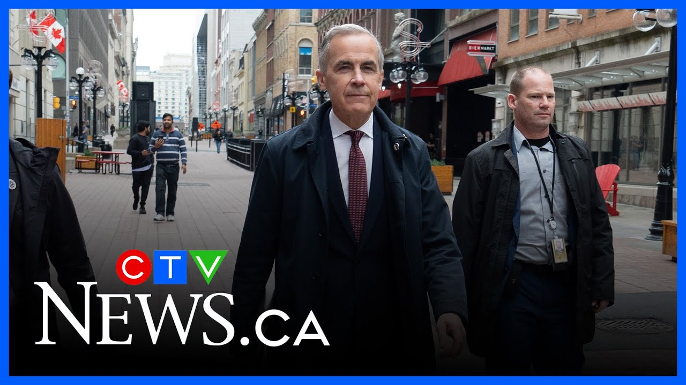

来B站一起耍【Global每日英语简报】
【卡尼首相与特朗普会晤面临的挑战】
Summary: Prime Minister Mark Carney is set to meet US President Donald Trump at the White House in a crucial discussion impacting Canada-US relations amid ongoing trade tensions. Carney aims for difficult but constructive talks, while Trump's unpredictability and rhetoric pose challenges.
摘要： 卡尼首相将在白宫与美国总统特朗普举行关键会谈，此次会晤将影响加美关系，当前贸易紧张局势持续。卡尼期望进行艰难但建设性的对话，而特朗普的不可预测性和言论构成挑战。

⏱️ Estimated Reading Time: 6 min
Turning now with a live look to Washington.
现在将镜头转向华盛顿的实时画面。
This is the White House this morning where in just a couple of hours, Prime Minister Mark Carney will arrive for a crucial meeting with US President Donald Trump.
这是今晨的白宫，几小时后，卡尼首相将抵达此处与美国总统特朗普举行关键会晤。
One that will have major implications on the future of the Canada US relationship.
此次会晤将对加美关系的未来产生重大影响。
Carney's trip to Washington comes at an important time for Canada.
卡尼的华盛顿之行正值加拿大的关键时期。
Our country has been severely impacted by Trump's trade war.
我国已受到特朗普贸易战的严重冲击。
The prime minister has said he expects difficult but constructive conversations.
首相表示他预计对话将艰难但具建设性。
The two leaders agreed in March that Trump and whoever became prime minister would meet to begin talks on a new economic and security pact.
两位领导人于三月同意，特朗普与任何新任首相将就新的经济与安全协议展开会谈。
CTV's Washington bureau chief Joy Malban is outside the White House.
CTV华盛顿分社社长乔伊·马尔班正在白宫外。
She joins us now with more.
她将为我们带来更多报道。
So Joy, set the stage for us.
乔伊，请为我们介绍背景。
What does Mark Carney need to navigate here?
卡尼在此需应对哪些挑战？
Well, look, this is Donald Trump, the most unpredictable president that that most people have seen in in recent years for sure.
要知道，这是特朗普，无疑是近年来大多数人眼中最不可预测的总统。
Um, you know, the strategy has to be um calm, cool, collected.
策略必须冷静、沉着、镇定。
Uh, another world leader is coming here to meet Donald Trump.
又一位国际领导人前来与特朗普会面。
Yesterday, he began downplaying it.
昨日，他开始淡化此次访问。
Donald Trump began downplaying this visit.
特朗普开始淡化此次访问。
But remember, he's the one who picked a fight with Canada.
但别忘了，是他先向加拿大挑起争端。
There are serious tensions between our two country.
我们两国间存在严重紧张关系。
We've seen it in Canada.
我们在加拿大已感受到这点。
Tourism way down.
旅游业大幅下滑。
Um, California's Governor Gavin Newsome, you know, practically begging Canadians to visit California.
加州州长纽森几乎在恳求加拿大人前往加州旅游。
There's a lot at stake here and Donald Trump, he is under pressure for a win.
此事关系重大，特朗普也面临取得成果的压力。
He has to start showing some kind of progress with his tariff trade war.
他必须开始在关税贸易战中展现某种进展。
Not one deal has been signed.
尚未签署任何协议。
They keep talking about hundreds of people wanting to do deals.
他们不断提及数百人有意达成协议。
Now, there will be no deal today, but you know, Mark Carney, uh, he's got to be strong.
今日不会达成协议，但卡尼必须态度坚定。
He's got to be firm.
他必须立场强硬。
And, and I'll be looking at the tone, the vibe.
我将关注会谈的基调与氛围。
you know, these Oval Office meetings, you you you've seen other world leaders um either be browbeat like what happened to President Zalinski of Ukraine or, you know, people lavishing praise on Donald Trump, like the prime minister of of England, bring an invitation from from King Charles.
其他领导人在椭圆办公室的会晤中，要么如乌克兰总统泽连斯基般受挫，要么如英国首相般对特朗普大加赞赏并转交查尔斯国王的邀请。
So, it's going to be interesting just to watch the body language first off.
因此，首先观察肢体语言会很有趣。
Yeah.
是的。
Yeah.
没错。
Tone so important.
基调至关重要。
So Joy, what do you think a a win or a victory would look like for Canada today when this meeting wraps up?
乔伊，你认为今日会晤结束后，加拿大的胜利会是什么样？
You know, the biggest win, I think, is if Donald Trump would stop talking about trying to take over Canada and annex Canada and that we're going to become the 51st state.
我认为最大胜利是特朗普停止谈论吞并加拿大或让我们成为第51个州。
He said it yet again on Sunday.
他周日再次提及此事。
He was asked on on NBC's Meet the Press, uh, would you ever consider military use?
他在NBC《会见媒体》中被问及会否考虑动用军事手段。
What?
什么？
We're talking invading Canada?
入侵加拿大？
You've got to be kidding me.
简直荒谬。
If he could stop talking about that, that would be a huge win.
若他能停止此类言论，将是巨大胜利。
But I don't suspect that will.
但我怀疑这不会发生。
It's part of Donald Trump's rhetoric.
这是特朗普惯用话术。
He loves that.
他乐此不疲。
Um uh a a win perhaps would be um you know what he said earlier that the prime minister is a nice man.
或许他曾称首相是"好人"也算一种胜利。
He's a nice gentleman showing some kind of respect for Canada.
他作为"绅士"展现出对加拿大的某种尊重。
And and I think, you know, the prime minister is going to come and and and probably try and have a broader conversation with Donald Trump that this just isn't trade because Trump's got it in his head that that somehow we are ripping him off like all these countries are ripping him off.
首相或将尝试与特朗普展开更广泛对话，不仅限于贸易，因特朗普认为我国与其他国家都在占他便宜。
He's got to try and and reset that he reset the relationship and and try and get Trump to think of different things and and what else can Canada offer?
他必须尝试重置关系，让特朗普思考其他议题，如加拿大还能提供什么。
What can we offer in way of security of of sharing intelligence?
我们能在安全情报共享方面提供什么？
um tourism, uh all those kinds of things.
旅游业等各类合作。
Those would be very big wins.
这些都将是重大成果。
But, you know, we're not going to see a trade deal today.
但今日不会达成贸易协议。
But if they come out of this shaking hands, being fine gentlemen, being both strong, that would be a win.
若他们握手言和，展现风度与坚定，那便是胜利。
Yeah.
是的。
Plant the seeds.
播下种子。
All right.
好的。
Joy Malban outside the White House for us in Washington.
华盛顿白宫外的乔伊·马尔班。
Joy, thank you.
乔伊，谢谢。